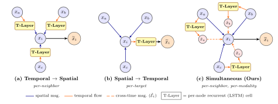
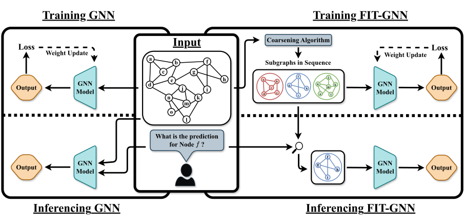
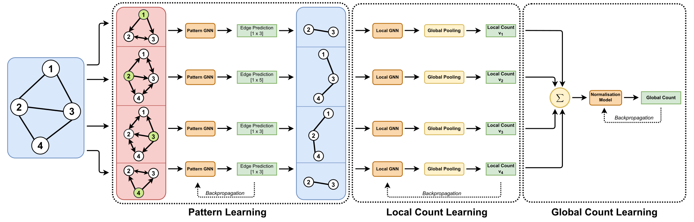

Publications
Research contributions in Graph Neural Networks, focusing on expressivity, efficiency, and practical applications
SiST-GNN: Simultaneous Spatial-Temporal Message Passing for Dynamic Graph Representation Learning

Snapshot-based dynamic GNNs are typically temporal-first or spatial-first: the rigid sequencing forces the second stage to consume an already-compressed summary from the first, so the message-passing operator never gets to weigh a neighbour's contribution by that neighbour's past trajectory. SiST-GNN instead fuses both signals inside a single message-passing operation — each node carries a recurrent hidden state summarising its history, which is paired with its current feature vector as two nodes joined by a cross-time edge, and a standard graph convolution over this temporally augmented graph yields the updated representation. Against fourteen link-prediction baselines, SiST-GNN improves on the strongest prior method by 1–18% in the fixed-split setting and leads on five of six datasets in the live-update setting (1–158%); on dynamic node classification it beats the best discrete-time baseline by 7–23% while matching continuous-time methods that consume raw event streams.
FIT-GNN: Faster Inference Time for GNNs that 'FIT' in Memory Using Coarsening

This paper addresses the computational efficiency challenges in Graph Neural Networks by proposing a novel graph coarsening technique. Our approach significantly reduces inference time and memory while maintaining model performance, making GNNs more practical for real-world applications with large-scale graphs.
Local Fragments, Global Gains: Subgraph Counting using Graph Neural Networks

We propose a novel approach to enhance the expressivity of Graph Neural Networks beyond the traditional Weisfeiler-Leman hierarchy limitations. Our localization-based method improves the ability of GNNs to distinguish between different graph structures while maintaining computational efficiency.
Research Interests
My research focuses on advancing the theoretical understanding and practical applications of Graph Neural Networks. I am particularly interested in:
- Expressivity Enhancement: Developing methods to improve GNN expressivity beyond current theoretical limitations
- Inference Optimization: Creating efficient algorithms for faster GNN inference in large-scale applications
- Dynamic Graph Learning: Unified spatial-temporal message passing for dynamic and temporal graph representation
- Streaming Graph Learning: Addressing challenges in dynamic graph scenarios and catastrophic forgetting
- Applications: Weather prediction, social network analysis, and knowledge graph construction